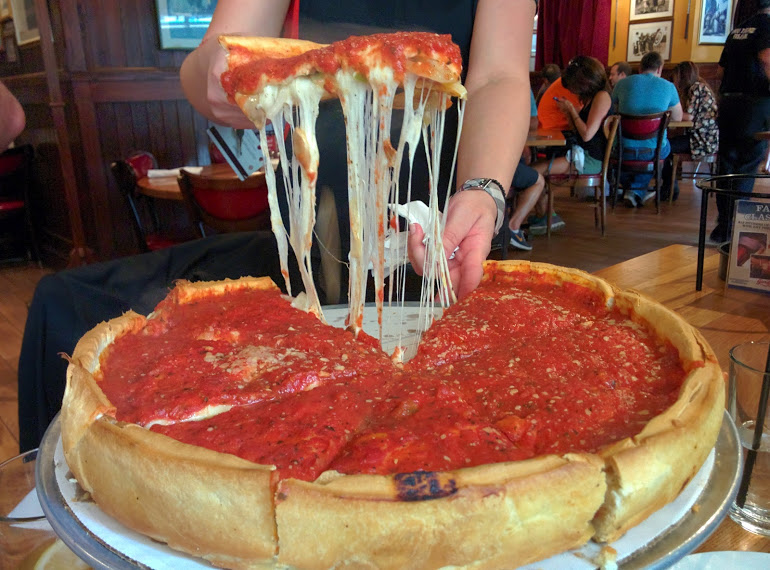

Description
Return to recipe index
Here's how to make authentic-tasting Chicago deep dish pizza. Complete with the buttery crust, slightly sweet tomato sauce, and a thick layer of cheese. This recipe makes two deep dish 9-inch pizzas. Make them both if you have a family of 4-5 or are having friends over. If your family is smaller, freeze half of the dough per the make-ahead/freezing instructions in the recipe notes.
Ingredients
Pizza Crust (makes 2)
- 3 and 1/4 cups (406g) all-purpose flour(spoon & leveled)
- 1/2 cups (60g) yellow cornmeal
- 1 and 1/4 teaspoon (12g) granulated salt
- 2 and 1/4 teaspoons (7g) Red Star instand yeast
- 1 and 1/4 cups (300 ml) of slightly warm water
- 1/2 cup (115) unsalted butter, divided (1/4) cup melted, 1/4 cup softened to room temperature
- olive oil for coating
Tomato Sauce for Both Pizzas
- 2 Tablespoons (30g) unsalted butter
- 1 small onion, grated (about 1/3 cups)
- 3/4 teaspoon salt
- 1 teaspoon dried oregno
- 1/2 teaspoon crused red pepper flakes(optional,but recommeneded)
- 3 garlic cloves, minced
- one 28-ounce can (794) crused tomatoes
- 1/4 teaspoon granulated sugar
Toppings for Both Pizzas
- 4 cups (about 16 oz) shredded mozzarella cheese
- 1/2 cups (45g) grated parmesan cheese
- optional: 1/2 sliced pepperoni
- optional: 4 slices of bacon, cooked and crumbled
instructions
for this section you will need two deep dish 9x2 inch round cake pans.
- For the Crust: Combine the flour, cornmeal, salt, sugar, and yeast in the bowl ofyour stand mixer fitted with a dough hook attachment. if you do not have a stand mixer use your hand mixer and a very large bowl. Add the warm water 90°F (32°C) and 1/4 cup of melted butter. Make sure it is not very hot or it will kill the yeast.
- Remove the dough from the bowl and form into a ball. Lightly grease a large mixing bowl with olive oil and place the dough inside (make sure to coat the dough in oil). Cover the bowl with aluminum foil and let it rise in a warm environment for 1-2 hours of unti double in size.
- Once the dough is ready, lightly flour a large work surface. Remove the dough from the bowl, set the bowl and aluminum foil aside (to use for later). Gently punch the dough to remove any air bubbles and roll the dough into a large 15x12 inch rectangle. Spread 1/4 cup of softened butter on top of the dough. Roll it up lengthwise Cut the dough log in half. Form th two pieces of dough into balls and place back into your greased bowl. Cover with aluminum foil and allow torise in the refrigerator (not in a warm place) for 1 hour untill they are puffy as you make the sauce.
- For the sauce: Place butter in a medium saucepan over mediumheat and allow it to melt. Once melted, add the grated onion, salt, oregano, and red pepper flakes. Once the onion has slightly browned after aobut 5 minutes, add the garlic, tomatoes, and sugar. Turn the heat down to low-medium and sllow it to simmer until it's hearty, fragrant, and thick- about 30 minutes. You'll have about 2 and 1/2 cups of sauce and this point. If you have more than that, keep simmering until the amount has reduced. Remove from heat and set aside until ready to be used. You may store the sauce in a tightly covered container in the refrigerator for up to 2 days if planning to make the pizza another day. You may freeze this sauce for up to 2 months as well.
- Preheat oven to 425°F (218°C)
- Assemble the pizzas: After the dough balls have risen in the refrigerator, they should be puffy. Keep one ball of dough in the refrigerator as you work with the first one. Roll it out on a lightly floured work surface, working it into 12-inch circle. Using your rolling pin as a guide, place over a 9x2 inch deep dish cake pan. Using your fingers, press the dough into the cake pan. Make sure it is nice and tight fitting inside the pan. Trim any excess dough off the edges with a small knife. Repeat with 2ed dough. Brush the top edges of the dough with a little olive oil, which gives the crust a beautiul sheen. Fill each pizza with 1/2 of cheese (around 2 cups/8 oz per pizze), then the pepperoni and bacon or your desired toppings. Pour about 1 and 1/4 cups (300 ml) of sauce evenly on top of each. if you do not like that much sauce, you can reduce to 3/4 cups (180 ml) per pizza and have leverover sauce. Sprinkle each with 1/4 cup (22g) of grated parmesan cheese
- place the cake pans on top of a large baking sheet, which will catch anything potentially spilling over the sides of the pans. (Nothing usually does.) Bake for 29-28 minutes or until the crust is golden brown. Feel free to loosely cover the pizzas with aluminm foil after the 15 minute mark to prevent any heavy browning and uneven baking. Remove the pizzas from the oven and allow them to cool in the pans placed on a wire rack for 10 minutes. After 10 minutes, slice, serve, and enjoy.